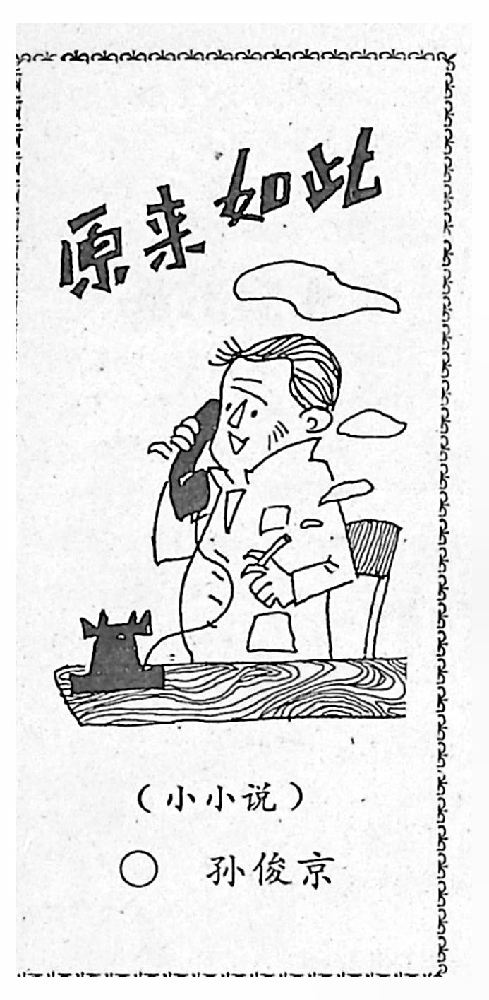

佚名 《人事》1988年第2期（总第29期），第48页
原来如此（题图）
So That's How It Is (title drawing)
- Passage illustrated
老潘寻思着走进钱厂长办公室，想提醒他一下。厂长正在接电话：“陈书记离休的事我们知道，休息后，我们一定照顾好，你放心吧！”“噢！”潘科长愣了……
Lao Pan went into Director Qian's office, meaning to remind him. The director was on the telephone: “We know about Secretary Chen's retirement. Once he has retired we'll certainly look after him — don't you worry!” “Oh!” Section Chief Pan was dumbfounded…Closing lines of the very short story 原来如此 (“So That's How It Is”) by Sun Junjing, on the same page. 孙俊京《原来如此》（小小说）结尾，同页
- Description
- Title drawing for the story: a smiling cadre in glasses chats on the telephone, pen in hand, at his desk.
- Note
- In the story the new administrative section chief draws up a list of six hardship households for a new block of flats; one by one the factory leaders strike names and substitute their relatives. Only one name, protected by Party Secretary Chen, survives — until the director is heard on the phone promising to take good care of Secretary Chen in his retirement.
- Artist
- Unattributed 佚名
- Published in
- 《人事》1988年第2期（总第29期）, p. 48
- Themes
- Connections (guanxi) · Nepotism · Privilege · Story illustrations

Cite
Unattributed, “原来如此（题图）” [So That's How It Is (title drawing)], Renshi (Personnel) 《人事》, 1988, no. 2, p. 48.